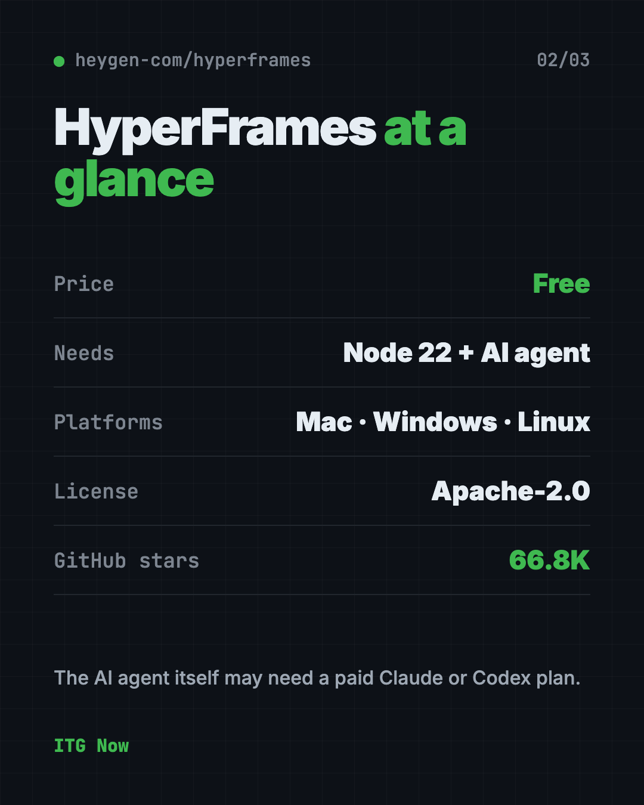
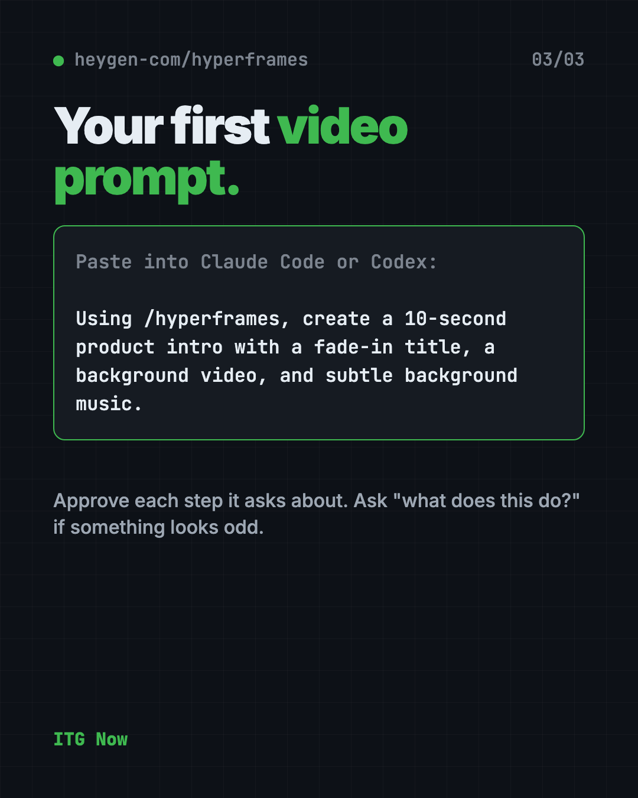

HyperFrames: Make AI Videos From HTML (2026 Guide)
- Published 19 Oct 2026
- 6 min read
- License Apache-2.0
- By the ITG Now team
In this guide (13)
HyperFrames is a free way to make AI video from HTML. Your AI helper writes a simple web page, and HyperFrames turns it into an MP4 video file.
Here's what that means in plain words, how you install it, and what you can ask your AI helper to make.
Key takeaways
- Free and open source. You don't pay for the tool. It's made by HeyGen under the Apache-2.0 license.
- Built for AI helpers. You'll use it through Claude Code, Codex or similar.
- Same input, same video. The README calls the output deterministic, meaning repeatable.
- Mac, Windows and Linux. You need Node 22 (a free tool that runs code) installed.
- One catch: you run it through an AI coding agent, and that agent may need a paid Claude or Codex plan.
What is HyperFrames?
HyperFrames is an open-source framework for turning HTML, CSS, media and animations into MP4 videos. HTML is the language web pages are written in.
The idea is simple. An AI helper is good at writing web pages. HyperFrames takes that page and records it as a video, frame by frame. The makers describe it as "Write HTML. Render video. Built for agents."
It comes from HeyGen and has about 66.8K stars on GitHub. Stars are like bookmarks, so many people find it useful.
Why make AI video from HTML?
A normal video editor is a pile of clicks. If you want 20 videos that look alike, you click 20 times.
A web page is just text, so an AI helper can write it fast and change it fast. Want a new title? Change one line and render again. Because the same input gives the same video, your style stays steady from clip to clip. That is the whole appeal of AI video from HTML: you describe it once, then reuse it.
The README also mentions ready-made blocks, like charts and title cards, so your helper doesn't start from a blank page.
How does HyperFrames work?
The README describes the loop your AI helper follows:
- Plan the video.
- Write valid HTML for it.
- Add animations and media like video and music.
- Check and preview it.
- Render it to an MP4 file.
The plugin gives your AI helper "skills," which are saved instructions it loads when needed. One skill, called /hyperframes, picks the right workflow for any "make me a video" request.
How to use HyperFrames (real examples)
The README lists ready-made workflows. Here is how they fit everyday jobs:
- Launch a product. Give it your website, and get a short promo video.
- Explain an idea. Paste text, and get a video with typography and diagrams, no product needed.
- Show what changed in code. Point it at a GitHub pull request and get an explainer video.
- Add captions. Put subtitles on a talking-head video without editing the footage.
- Make a quick intro. Ask for a 10-second title card with music.
💡 Tip: Start small. Ask for a 10-second video first, then add to it once you like the style.
Is HyperFrames free?
Yes. HyperFrames is free to use under the Apache-2.0 license. The README lists no paid plan for the tool itself.
The catch is the AI helper. Claude Code and Codex may need their own paid plans.
HyperFrames at a glance
| Price | Free |
| Works offline | Rendering runs locally, but your AI helper needs the internet |
| Platforms | Mac, Windows, Linux (Node 22 or newer) |
| License | Apache-2.0 (open source) |
| Latest version | 0.8.173 (October 18, 2026) |
| Needs | An AI coding agent such as Claude Code or Codex |
| Best for | Creators and marketers who want repeatable, templated videos |

Who should use HyperFrames?
- Marketers who need many similar videos, like product clips.
- Creators who want titles, charts and captions made fast.
- Developers who want to turn a code change into a short video.
- Teams that want videos made the same way every time.
It isn't a drag-and-drop editor. If you don't use an AI coding agent, it isn't the easiest start.
How to install HyperFrames
These are the official steps from the HyperFrames README. You need Node 22 and Claude Code.
In Claude Code, copy and paste these two lines, one at a time:
claude plugin marketplace add heygen-com/hyperframes
claude plugin install hyperframes@hyperframes
Then use the /hyperframes:hyperframes command in Claude Code to start. For other tools, the README says to run npx skills add heygen-com/hyperframes. It also covers Copilot, VS Code, Cursor and Gemini CLI.
⚠️ Heads up: The skills picker opens with nothing selected. The README says the Core Skills group is all you need.
Let Claude or Codex set it up for you
Claude Code and OpenAI Codex are AI helpers that can run setup steps on your computer for you. You paste a request, it does the steps, and you approve each one.
Copy and paste this:
Please help me set up HyperFrames from github.com/heygen-com/hyperframes.
1. Check that I have Node 22 or newer, and tell me if I need to install it.
2. Install the HyperFrames plugin the way the README says.
3. Explain each step before you run it.
4. Then make a 10-second test video with a fade-in title and subtle music.
Then try asking:
Using /hyperframes, make a 15-second promo video from my website.
Add captions to this video file using HyperFrames.
Explain what this video template does, in plain words.

What are HyperFrames' limits?
- It needs an AI agent. There's no simple "open and click" app in the README steps.
- Node 22 is required.
- It is moving fast. There have been 170+ releases, so details change often.
- Your AI plan may cost money.
Our take
HyperFrames is a smart idea: let the AI do what it is already good at, writing pages, and turn the result into video. If you already use Claude Code, it is cheap to try.
What we like:
- Free tool from a real company, with clear open-source terms.
- Repeatable videos, so templates stay consistent.
- Ready-made workflows for promos, explainers and captions.
What to watch for:
- Not for people who want a regular video editor.
- Needs an AI coding agent that may cost money.
- Changes often, so read the README before you start.
Want a point-and-click editor instead? Read our OpenReel Video guide. Need a voiceover for your videos? Try VoiceStudio, a free ElevenLabs alternative.
FAQ
What is HyperFrames?
HyperFrames is a free, open-source tool that turns HTML into MP4 video. Your AI helper writes the page, and HyperFrames renders it.
Is HyperFrames free?
Yes. The tool is free under the Apache-2.0 license. The AI coding agent you use with it may need a paid plan.
Do I need to know how to code to use HyperFrames?
No, but you do need to use an AI coding agent like Claude Code. You describe the video in plain words and the agent writes the code.
Does HyperFrames work with Codex?
Yes. The README says the skills work with Claude Code, Codex, Cursor, Gemini CLI and other agents that support skills.
What do I need to install HyperFrames?
You need Node 22 or newer and an AI coding agent. Claude Code users install it with two plugin commands.
Who makes HyperFrames?
HeyGen publishes it on GitHub under its heygen-com account.
Get HyperFrames: github.com/heygen-com/hyperframes
Keep reading

VoiceStudio: Free ElevenLabs Alternative
VoiceStudio is a free ElevenLabs alternative. Clone a voice, dub videos and turn text into speech on your own Mac, Windows or Linux computer.

Folia: Free Animated Lyrics Music Player
Folia is a free animated lyrics music player that shows full-screen moving lyrics for your local music, Navidrome and more. What it does and how to start.

net-merge: Combine Wi-Fi and Phone Internet, Free
net-merge is a free app to use two internet connections at once, like Wi-Fi plus a phone hotspot, on Windows, Mac and Linux. No account or VPN.